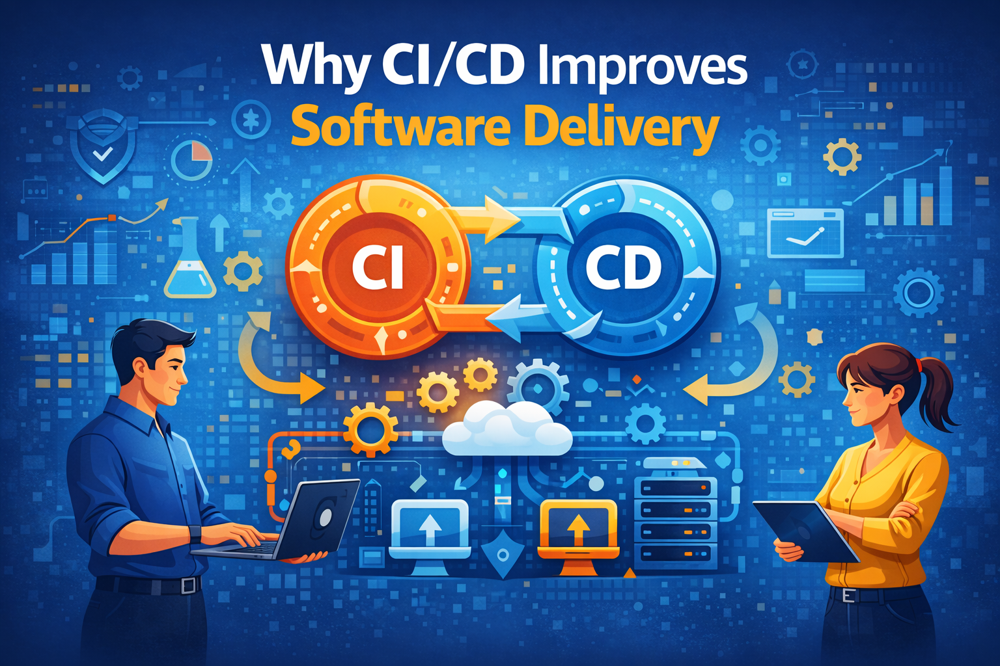

In modern software development, speed and reliability are critical. Organizations must deliver updates quickly while maintaining high quality and stability. Continuous Integration and Continuous Delivery (CI/CD) practices help development teams automate the build, testing, and deployment processes, making software delivery faster and more reliable.
CI/CD automates the build and deployment pipeline, allowing development teams to release new features and fixes more frequently. Instead of waiting for large releases, updates can be delivered continuously in smaller, manageable increments.
Continuous Integration ensures that every code change is automatically tested when it is committed. Automated testing identifies bugs early in the development process, reducing the risk of defective code reaching production environments.
Traditional deployments often involve complex manual steps that increase the risk of errors. CI/CD pipelines standardize deployment processes, ensuring that applications are deployed consistently across environments.
Automated testing and integration pipelines allow developers to detect and resolve issues earlier in the development lifecycle. This significantly reduces the cost and time required to fix bugs.
CI/CD encourages collaboration between development, testing, and operations teams. By integrating workflows and automating processes, teams can work more efficiently and reduce communication gaps.
Automated pipelines provide instant feedback when code changes are introduced. Developers quickly learn whether their updates pass tests and integration checks, helping them maintain stable codebases.
Automation reduces repetitive manual tasks such as building software, running tests, and deploying updates. This allows developers to focus more on innovation and feature development rather than operational work.
CI/CD pipelines can scale easily as projects grow. Whether teams manage small applications or complex distributed systems, automated pipelines can support larger workloads and faster release cycles.
Modern CI/CD pipelines integrate security scanning tools that automatically detect vulnerabilities during development. This helps organizations maintain compliance with security standards while protecting applications from threats.
Organizations that adopt CI/CD can innovate faster and respond quickly to customer needs. Faster development cycles allow businesses to stay ahead of competitors while maintaining reliable and stable software systems.
CI/CD is a key component of modern DevOps practices. By automating software integration, testing, and deployment, organizations can deliver applications faster, improve quality, and create more resilient development workflows.